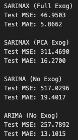
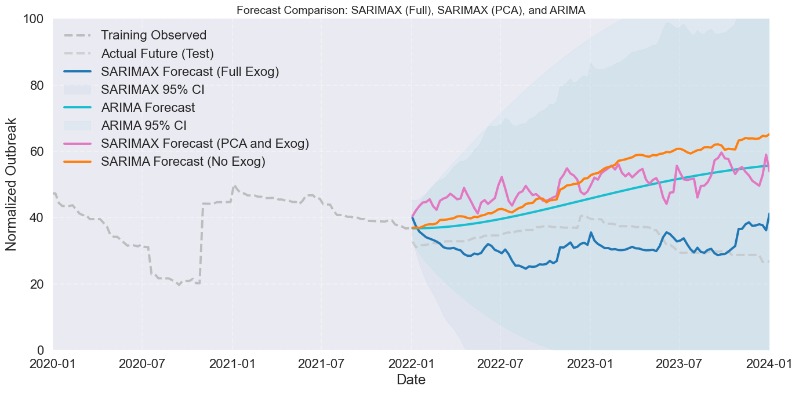
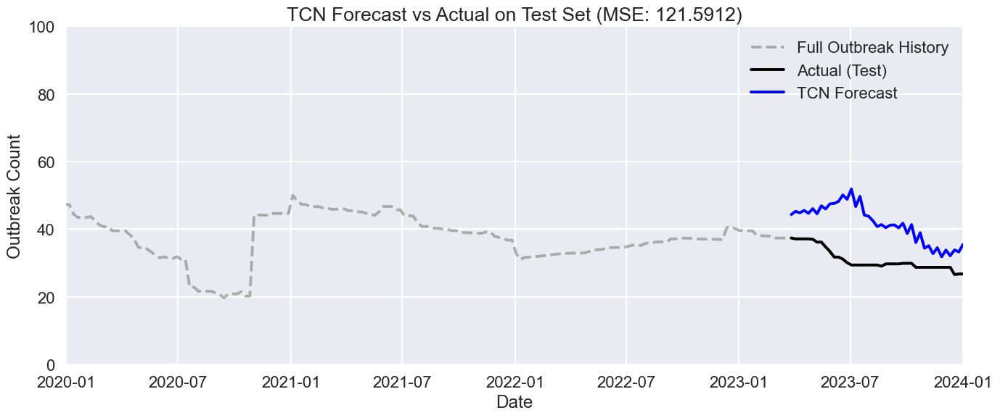
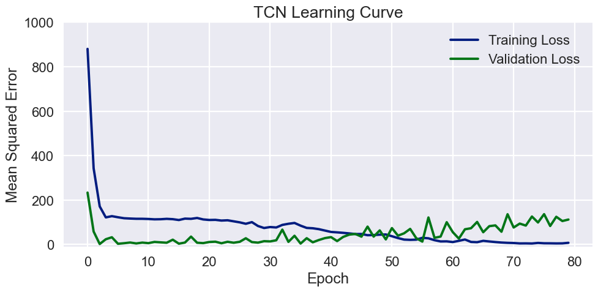

Overview
This project explores predictive modeling techniques for identifying disease outbreaks in farmed salmon within Norway, focusing on time series methods. It contrasts the effectiveness of traditional SARIMAX models with Temporal Convolutional Networks (TCNs), emphasizing the integration of exogenous variables and the complexities of capturing non-linear patterns in disease outbreak data.The project reveals the limitations of SARIMAX for modeling complex, multi-dimensional time series data in the context of disease outbreaks among salmon. Temporal Convolutional Networks emerged as a more effective approach, demonstrating improved accuracy and robustness in handling non-linear relationships and long-term dependencies. An interactive map was created in python using folium. sea temperature and all the outbreaks over time for each site. If the site has a deeper red it means there are more active outbreaks at that site. If you click on the site you get information on the lice count per fish for that site, sea temperature and the number of licensed sites in that area, to give an idea of density.
Project Task
The primary datasets were retrieved from the Norwegian Food Safety Authority (Norwegian Food Safety Authority, 2024). The API allows selection of the 2 main datasets proposed in this study: Salmon diseases, Salmon lice. The datasets are recorded from 2012 to 2019 with approximately 75000 disease events and the salmon lice dataset has approximately 750000 rows. 2nd dataset (salmon Lice) tracks weekly records of salmon lice infestation levels and environmental conditions across various salmon farms in Norway. This project involved integrating multiple datasets in different formats to create a comprehensive framework for predicting disease outbreaks in farmed salmon. Additionally, geospatial data in formats like GEOjson The data sources ranged from outbreak records in CSV files to environmental metrics stored in structured databases and farm-specific metrics in Excel files.
A key challenge was harmonizing these diverse formats and aligning them temporally, as the data were collected at varying frequencies (e.g., daily , weekly, and monthly). Temporal resampling and interpolation were employed to create a unified timeline, while geospatial data were transformed into tabular formats to integrate with time series models. The variability in scales and units across datasets required robust scaling and normalization techniques to ensure consistency. Missing data were addressed using imputation methods, while dimensionality reduction helped manage the high dimensionality introduced by numerous exogenous variables. The resulting integrated dataset enabled the inclusion of critical factors like temperature, lice counts, and farm density into the modelling process, using both SARIMAX and TCN models. This comprehensive data preparation facilitated a deeper exploration of temporal and spatial patterns, ultimately improving the predictive accuracy of disease outbreak models and providing a goodfoundation for model comparison and evaluation.
Methods
The investigation analyzes each county separately to align with the disease management priorities of the kommune, focusing on localized outbreak patterns. The following results are from Trøndelag. Seasonal decomposition plots revealed both clear seasonal patterns and long-term trends, justifying the use of models that explicitly capture seasonality, such as SARIMA and SARIMAX. To develop the SARIMAX models, optimal hyperparameters (p,d,q)(p, d, q)(p,d,q) and seasonal terms (P,D,Q,s)(P, D, Q, s)(P,D,Q,s) were determined via grid search,. Separate models were fitted with and without exogenous variables to assess their contribution.
The exogenous variables — sea temperature and total lice counts — were first normalized using MinMaxScaler to bring all features to a 0–1 range. To address potential multicollinearity between the exogenous predictors, Principal Component Analysis (PCA) was applied. The first principal component explained over 90% of the variance, and was used as an alternative exogenous input in one variant of the SARIMAX model.
A Temporal Convolutional Network (TCN) was also trained to forecast normalized disease outbreaks using sea temperature and lice count as exogenous features. The features were scaled using MinMaxScaler, and input sequences were generated with a lookback window of 150 time steps. The model architecture included a TCN layer with 64 filters, kernel size of 5, and dilations of [2, 4, 8], followed by a dense output layer. The data was split chronologically (no shuffling) into training and test sets, and the model was trained for 100 epochs using the Adam optimizer with a learning rate of 0.01.
To optimize the TCN model, we performed a grid search over combinations of key hyperparameters, including the number of filters, kernel sizes, dilation sets, learning rates, and batch sizes. For each configuration, a TCN model was trained for 30 epochs using a validation split from the training set (without shuffling to preserve time order). After training, both validation and test mean squared errors (MSE) were recorded to evaluate performance.
Forecasting performance was then evaluated across:
- SARIMA (no exogenous variables)
- SARIMAX (with exogenous variables)
- SARIMAX with PCA-reduced and exogenous variables
- TCN with exogenous variables
Results
Despite including exogenous predictors such as sea temperature and total lice counts, SARIMAX did not seem to improve forecast accuracy over SARIMA. The forecasts and errors from SARIMAX were nearly identical to those from SARIMA, indicating that the exogenous variables did not contribute meaningfully to the model's predictive power.
This suggests that the seasonal structure alone captured by the SARIMA model is the dominant signal in the data. Also to address potential multicollinearity between exogenous variables, Principal Component Analysis (PCA) was applied as a dimensionality reduction step. However, incorporating PCA-transformed features into SARIMAX had no measurable impact on model performance, further reinforcing that external variables — correlated or otherwise — did not improve forecasts in this context.
 The TCN model outperformed other approaches in terms of mean squared error (MSE), indicating its superior ability to capture temporal patterns using the provided exogenous variables. However, the predictions were still imperfect, suggesting that additional underlying trends in the outbreak data may exist that are not explained by sea temperature or lice counts alone.